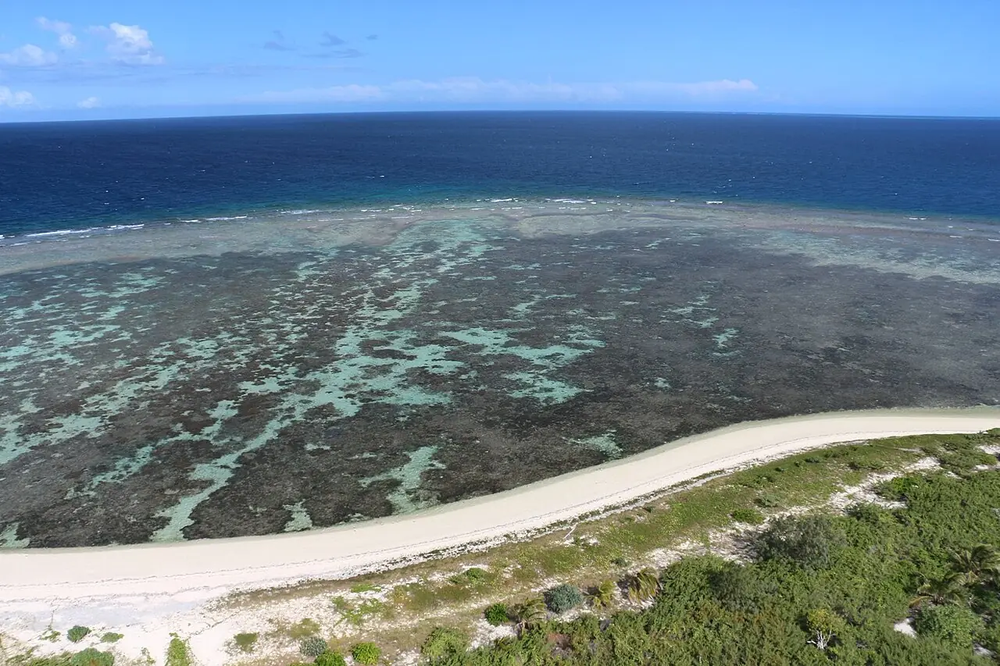

Îlot Amédée
Province Sud, Nouvelle-Calédonie · snorkeling, plongée, baignade

Îlot de sable dominé par son grand phare métallique, dans le lagon au sud de Nouméa, près de la passe de Boulari. Tout autour, le récif offre du snorkeling facile ; on y va en bateau depuis Nouméa.
- Lieu
- Province Sud, Nouvelle-Calédonie
- Niveau
- Débutant
- Activités
- snorkeling, plongée, baignade
- Type d'eau
- Mer / océan
- Coordonnées
- -22.48, 166.47 (position approximative du secteur)
Dangers à connaître
- Tricots rayés (serpents marins venimeux mais peu agressifs) : ne les touche pas.
- Courant fort vers la passe de Boulari.
Le conseil d'Ocean Buddy
Nage sur les herbiers et le récif côté lagon, à l’abri : le côté de la passe est exposé au courant.
Ouvrir dans Ocean Buddy Télécharger sur l'App Store
Source : Fiche Ocean Buddy · septembre 2026 · à vérifier localement.